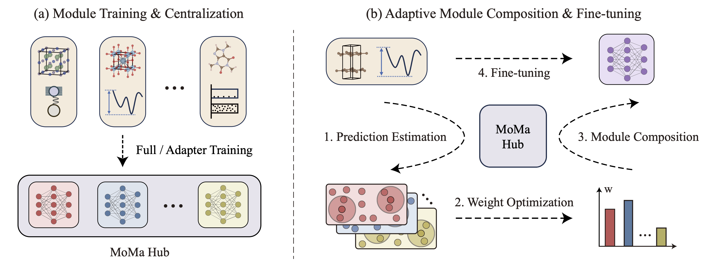
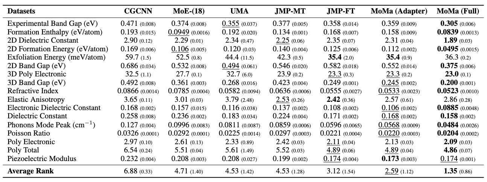

Train specialized modules. Compose adaptively. Predict accurately.
Material property prediction is critical for accelerating materials discovery, yet material tasks exhibit significant diversity (spanning electronic, thermal, mechanical properties across crystals, molecules, and more) and disparity (governed by distinct physical laws). Naively pre-train then fine-tune often fails to address these challenges, where a monolithic model suffers from negative transfer.
MoMa (Modular learning for Materials) reframes learning as modular composition. Instead of forcing all tasks into one shared model, MoMa trains specialized modules on diverse high-resource tasks and adaptively composes synergistic modules tailored to each downstream scenario, enabling effective knowledge reuse while mitigating interference.
MoMa operates in two stages: (1) Module Training & Centralization, which distills transferable knowledge from diverse high-resource tasks into a shared MoMa Hub; and (2) Adaptive Module Composition (AMC) & Fine-tuning, where MoMa selects and weights modules via a training-free kNN estimator and convex optimization, then fine-tunes the composed model.

The MoMa framework. (a) Module Training & Centralization: train specialized modules and store them in MoMa Hub. (b) Adaptive Module Composition: estimate module relevance via kNN, optimize composition weights, and fine-tune.
Beyond strong empirical performance, our analysis reveals three insights about modular material learning:
Evaluation across 17 downstream material property prediction tasks. All results are the average of five data splits (MAE).

Main results for 17 material property prediction tasks. MoMa (Full) achieves the best average rank of 1.35, outperforming all baselines with an average improvement of 14%.
If you find this work useful, please cite our paper: